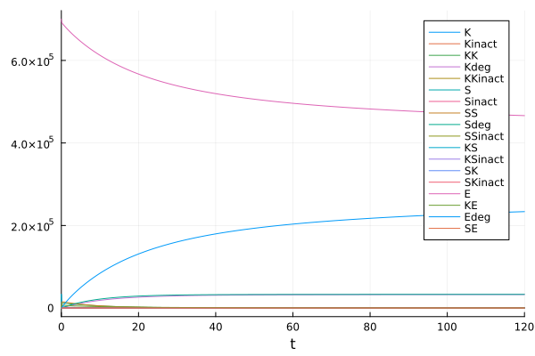
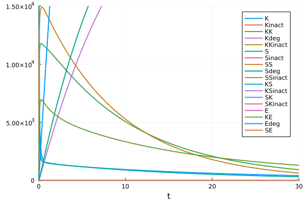
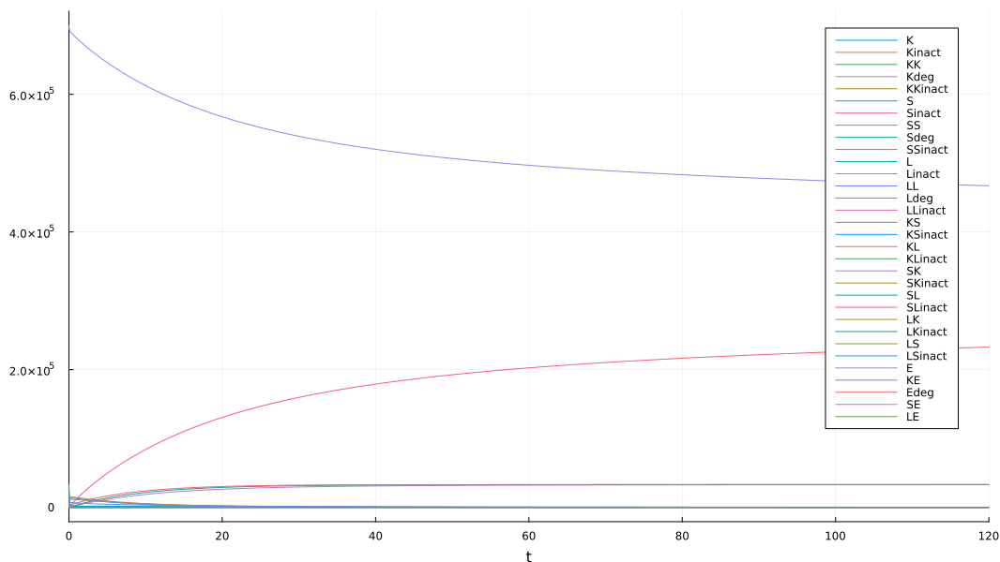
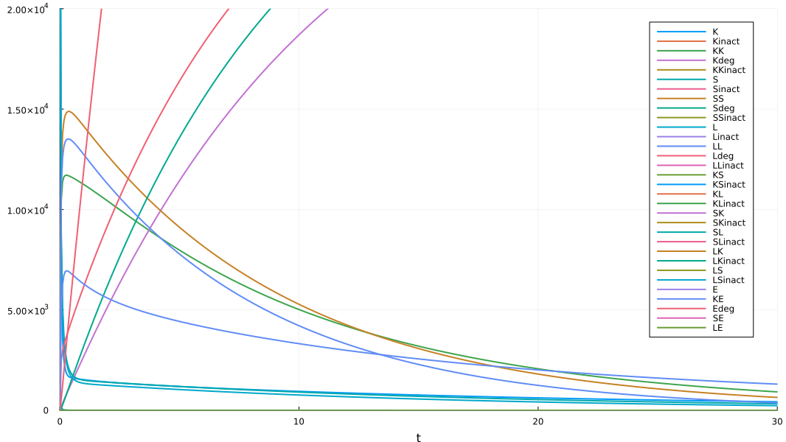
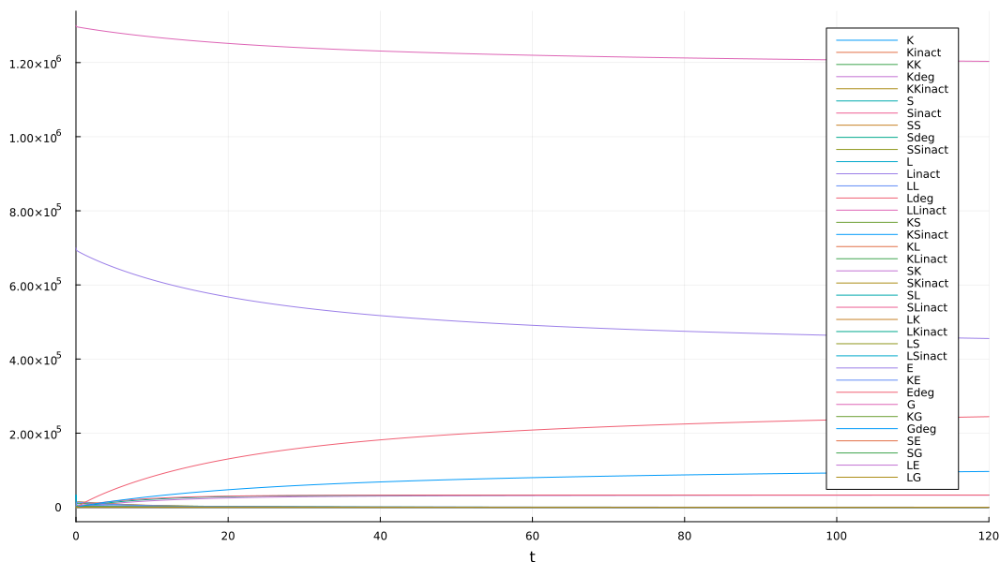
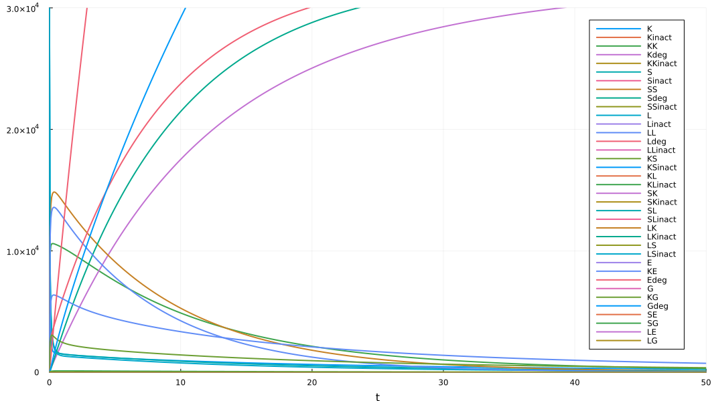

using AlgebraicPetri
using Catlab.Programs
using Catlab.Graphics
using Catlab.WiringDiagrams
using Catlab.CategoricalAlgebra
using DifferentialEquations
using Plots
display_uwd(ex, prog="neato") = to_graphviz(ex, box_labels=:name, junction_labels=:variable, graph_attrs=Dict(:overlap => "false"), prog=prog)
ode(x, t) = ODEProblem(vectorfield(x), concentrations(x), t, rates(x));
ob(x) = codom(Open([first(x)], LabelledReactionNet{Number,Int}([x]), [first(x)])).ob;
K = :K=>33000;
S = :S=>33000;
L = :L=>33000;
Kinact = :Kinact=>0;
Sinact = :Sinact=>0;
Linact = :Linact=>0;
E = :E=>700000;
G = :G=>1300000;
inact(in,on::Number) = begin
inact = Symbol(first(in), :inact)
Open(LabelledReactionNet{Number,Int}(unique((in, inact=>0)), ((Symbol(:inact_,first(in)),on),first(in)=>inact)))
end;
bind(in1, in2, on::Number, off::Number) = begin
out = Symbol(first(in1),first(in2))
Open(LabelledReactionNet{Number,Int}(unique((in1, in2,out=>0)), ((Symbol(:bind_,first(in1),first(in2)),on),(first(in1),first(in2))=>out),
((Symbol(:unbind_,out),off),out=>(first(in1),first(in2)))))
end;
deg(prod1,prod2,on::Number) = begin
in = Symbol(first(prod1),first(prod2))
prod2str = String(first(prod2))
degprod2 = Symbol(endswith(prod2str, "inact") ? first(prod2str) : prod2str, :deg)
Open(LabelledReactionNet{Number,Int}(unique((in=>0, prod1,degprod2=>0)), ((Symbol(:deg_,in),on),in=>(first(prod1),degprod2))));
end;
catX = @relation (X, Xinact, Xdeg) where (X, Xinact, Xdeg, XX, XXinact) begin
inactX(X, Xinact)
bindXX(X, XX)
degXX(XX, X, Xdeg)
bindXXinact(X, Xinact, XXinact)
degXXinact(XXinact, X, Xdeg)
end
display_uwd(catX)

-->
<!-- Title: G Pages: 1 -->
<svg width="432pt" height="287pt"
viewBox="0.00 0.00 432.01 287.43" xmlns="http://www.w3.org/2000/svg" xmlns:xlink="http://www.w3.org/1999/xlink">
<g id="graph0" class="graph" transform="scale(1 1) rotate(0) translate(4 283.43)">
<title>G</title>
<polygon fill="white" stroke="transparent" points="-4,4 -4,-283.43 428.01,-283.43 428.01,4 -4,4"/>
<!-- n1 -->
<g id="box1" class="node">
<title>n1</title>
<ellipse fill="none" stroke="black" cx="113.94" cy="-131.25" rx="31.58" ry="18"/>
<text text-anchor="middle" x="113.94" y="-127.55" font-family="Serif" font-size="14.00">inactX</text>
</g>
<!-- n9 -->
<!-- junction -->
<g id="junction1" class="node">
<title>n9</title>
<ellipse fill="black" stroke="black" cx="202.13" cy="-133.69" rx="2.5" ry="2.5"/>
<text text-anchor="middle" x="194.63" y="-139.99" font-family="Serif" font-size="14.00">X</text>
</g>
<!-- n1&%2345;&%2345;n9 -->
<g id="edge1" class="edge">
<title>n1&%2345;&%2345;n9</title>
<path fill="none" stroke="black" d="M145.78,-132.14C166.7,-132.71 191.61,-133.4 199.56,-133.62"/>
</g>
<!-- n10 -->
<!-- junction -->
<g id="junction2" class="node">
<title>n10</title>
<ellipse fill="black" stroke="black" cx="74.16" cy="-204.47" rx="2.5" ry="2.5"/>
<text text-anchor="middle" x="48.66" y="-210.77" font-family="Serif" font-size="14.00">Xinact</text>
</g>
<!-- n1&%2345;&%2345;n10 -->
<g id="edge7" class="edge">
<title>n1&%2345;&%2345;n10</title>
<path fill="none" stroke="black" d="M104.51,-148.6C94.59,-166.87 79.8,-194.08 75.42,-202.14"/>
</g>
<!-- n2 -->
<g id="box2" class="node">
<title>n2</title>
<ellipse fill="none" stroke="black" cx="187.52" cy="-48.04" rx="35.14" ry="18"/>
<text text-anchor="middle" x="187.52" y="-44.34" font-family="Serif" font-size="14.00">bindXX</text>
</g>
<!-- n2&%2345;&%2345;n9 -->
<g id="edge2" class="edge">
<title>n2&%2345;&%2345;n9</title>
<path fill="none" stroke="black" d="M190.62,-66.21C194.27,-87.62 200.05,-121.5 201.68,-131.09"/>
</g>
<!-- n12 -->
<!-- junction -->
<g id="junction4" class="node">
<title>n12</title>
<ellipse fill="black" stroke="black" cx="255.06" cy="-2.5" rx="2.5" ry="2.5"/>
<text text-anchor="middle" x="242.56" y="-8.8" font-family="Serif" font-size="14.00">XX</text>
</g>
<!-- n2&%2345;&%2345;n12 -->
<g id="edge13" class="edge">
<title>n2&%2345;&%2345;n12</title>
<path fill="none" stroke="black" d="M208.89,-33.63C225.28,-22.58 246.19,-8.48 252.89,-3.96"/>
</g>
<!-- n3 -->
<g id="box3" class="node">
<title>n3</title>
<ellipse fill="none" stroke="black" cx="274.15" cy="-82.69" rx="31.58" ry="18"/>
<text text-anchor="middle" x="274.15" y="-78.99" font-family="Serif" font-size="14.00">degXX</text>
</g>
<!-- n3&%2345;&%2345;n9 -->
<g id="edge3" class="edge">
<title>n3&%2345;&%2345;n9</title>
<path fill="none" stroke="black" d="M254.09,-96.9C236.11,-109.63 211.48,-127.07 204.22,-132.21"/>
</g>
<!-- n11 -->
<!-- junction -->
<g id="junction3" class="node">
<title>n11</title>
<ellipse fill="black" stroke="black" cx="344.34" cy="-129.76" rx="2.5" ry="2.5"/>
<text text-anchor="middle" x="323.34" y="-136.06" font-family="Serif" font-size="14.00">Xdeg</text>
</g>
<!-- n3&%2345;&%2345;n11 -->
<g id="edge10" class="edge">
<title>n3&%2345;&%2345;n11</title>
<path fill="none" stroke="black" d="M294.83,-96.56C311.98,-108.06 334.68,-123.28 341.98,-128.18"/>
</g>
<!-- n3&%2345;&%2345;n12 -->
<g id="edge14" class="edge">
<title>n3&%2345;&%2345;n12</title>
<path fill="none" stroke="black" d="M269.82,-64.49C265.07,-44.53 257.83,-14.12 255.68,-5.11"/>
</g>
<!-- n4 -->
<g id="box4" class="node">
<title>n4</title>
<ellipse fill="none" stroke="black" cx="155.43" cy="-213.12" rx="55.85" ry="18"/>
<text text-anchor="middle" x="155.43" y="-209.42" font-family="Serif" font-size="14.00">bindXXinact</text>
</g>
<!-- n4&%2345;&%2345;n9 -->
<g id="edge4" class="edge">
<title>n4&%2345;&%2345;n9</title>
<path fill="none" stroke="black" d="M166.03,-195.1C177.65,-175.32 195.36,-145.2 200.61,-136.28"/>
</g>
<!-- n4&%2345;&%2345;n10 -->
<g id="edge8" class="edge">
<title>n4&%2345;&%2345;n10</title>
<path fill="none" stroke="black" d="M102.13,-207.44C90.88,-206.25 81.07,-205.2 76.65,-204.73"/>
</g>
<!-- n13 -->
<!-- junction -->
<g id="junction5" class="node">
<title>n13</title>
<ellipse fill="black" stroke="black" cx="233.21" cy="-261.93" rx="2.5" ry="2.5"/>
<text text-anchor="middle" x="203.21" y="-268.23" font-family="Serif" font-size="14.00">XXinact</text>
</g>
<!-- n4&%2345;&%2345;n13 -->
<g id="edge15" class="edge">
<title>n4&%2345;&%2345;n13</title>
<path fill="none" stroke="black" d="M181.33,-229.37C200.07,-241.13 223.35,-255.74 230.8,-260.42"/>
</g>
<!-- n5 -->
<g id="box5" class="node">
<title>n5</title>
<ellipse fill="none" stroke="black" cx="282.01" cy="-184.59" rx="52.96" ry="18"/>
<text text-anchor="middle" x="282.01" y="-180.89" font-family="Serif" font-size="14.00">degXXinact</text>
</g>
<!-- n5&%2345;&%2345;n9 -->
<g id="edge5" class="edge">
<title>n5&%2345;&%2345;n9</title>
<path fill="none" stroke="black" d="M256.73,-168.48C236.99,-155.9 211.69,-139.79 204.27,-135.06"/>
</g>
<!-- n5&%2345;&%2345;n11 -->
<g id="edge11" class="edge">
<title>n5&%2345;&%2345;n11</title>
<path fill="none" stroke="black" d="M301.39,-167.54C316.54,-154.21 336.06,-137.05 342.32,-131.55"/>
</g>
<!-- n5&%2345;&%2345;n13 -->
<g id="edge16" class="edge">
<title>n5&%2345;&%2345;n13</title>
<path fill="none" stroke="black" d="M270.69,-202.52C258.53,-221.8 240.21,-250.84 234.78,-259.44"/>
</g>
<!-- n6 -->
<!-- n6&%2345;&%2345;n9 -->
<g id="edge6" class="edge">
<title>n6&%2345;&%2345;n9</title>
<path fill="none" stroke="black" d="M219.66,-201.33C217.96,-194.75 205.81,-147.9 202.8,-136.29"/>
</g>
<!-- n7 -->
<!-- n7&%2345;&%2345;n10 -->
<g id="edge9" class="edge">
<title>n7&%2345;&%2345;n10</title>
<path fill="none" stroke="black" d="M1.33,-229.92C8.47,-227.42 59.76,-209.5 71.69,-205.33"/>
</g>
<!-- n8 -->
<!-- n8&%2345;&%2345;n11 -->
<g id="edge12" class="edge">
<title>n8&%2345;&%2345;n11</title>
<path fill="none" stroke="black" d="M423,-127.03C417.05,-127.23 360.3,-129.21 347.09,-129.67"/>
</g>
</g>
</svg>
)
catXsubY = @relation (X, Xinact, Xdeg, Y, Ydeg) where (X, Xinact, Xdeg, Y, XY, Ydeg) begin
bindXY(X, Y, XY)
degXY(XY, X, Ydeg)
end
display_uwd(catXsubY)

-->
<!-- Title: G Pages: 1 -->
<svg width="266pt" height="148pt"
viewBox="0.00 0.00 266.03 148.00" xmlns="http://www.w3.org/2000/svg" xmlns:xlink="http://www.w3.org/1999/xlink">
<g id="graph0" class="graph" transform="scale(1 1) rotate(0) translate(4 144)">
<title>G</title>
<polygon fill="white" stroke="transparent" points="-4,4 -4,-144 262.03,-144 262.03,4 -4,4"/>
<!-- n1 -->
<g id="box1" class="node">
<title>n1</title>
<ellipse fill="none" stroke="black" cx="95.64" cy="-74.51" rx="34.96" ry="18"/>
<text text-anchor="middle" x="95.64" y="-70.81" font-family="Serif" font-size="14.00">bindXY</text>
</g>
<!-- n8 -->
<!-- junction -->
<g id="junction1" class="node">
<title>n8</title>
<ellipse fill="black" stroke="black" cx="140.87" cy="-49.17" rx="2.5" ry="2.5"/>
<text text-anchor="middle" x="133.37" y="-35.47" font-family="Serif" font-size="14.00">X</text>
</g>
<!-- n1&%2345;&%2345;n8 -->
<g id="edge1" class="edge">
<title>n1&%2345;&%2345;n8</title>
<path fill="none" stroke="black" d="M119.31,-61.25C127.18,-56.84 134.87,-52.53 138.58,-50.46"/>
</g>
<!-- n11 -->
<!-- junction -->
<g id="junction4" class="node">
<title>n11</title>
<ellipse fill="black" stroke="black" cx="47.07" cy="-71.85" rx="2.5" ry="2.5"/>
<text text-anchor="middle" x="39.57" y="-78.15" font-family="Serif" font-size="14.00">Y</text>
</g>
<!-- n1&%2345;&%2345;n11 -->
<g id="edge6" class="edge">
<title>n1&%2345;&%2345;n11</title>
<path fill="none" stroke="black" d="M60.85,-72.6C56.23,-72.35 52.24,-72.13 49.76,-71.99"/>
</g>
<!-- n12 -->
<!-- junction -->
<g id="junction5" class="node">
<title>n12</title>
<ellipse fill="black" stroke="black" cx="126.16" cy="-116.14" rx="2.5" ry="2.5"/>
<text text-anchor="middle" x="114.16" y="-122.44" font-family="Serif" font-size="14.00">XY</text>
</g>
<!-- n1&%2345;&%2345;n12 -->
<g id="edge8" class="edge">
<title>n1&%2345;&%2345;n12</title>
<path fill="none" stroke="black" d="M108.05,-91.44C114.39,-100.09 121.41,-109.66 124.52,-113.9"/>
</g>
<!-- n2 -->
<g id="box2" class="node">
<title>n2</title>
<ellipse fill="none" stroke="black" cx="171.32" cy="-91.13" rx="31.58" ry="18"/>
<text text-anchor="middle" x="171.32" y="-87.43" font-family="Serif" font-size="14.00">degXY</text>
</g>
<!-- n2&%2345;&%2345;n8 -->
<g id="edge2" class="edge">
<title>n2&%2345;&%2345;n8</title>
<path fill="none" stroke="black" d="M158.93,-74.07C152.61,-65.35 145.61,-55.71 142.51,-51.43"/>
</g>
<!-- n2&%2345;&%2345;n12 -->
<g id="edge9" class="edge">
<title>n2&%2345;&%2345;n12</title>
<path fill="none" stroke="black" d="M148.47,-103.78C140.42,-108.24 132.42,-112.68 128.55,-114.82"/>
</g>
<!-- n13 -->
<!-- junction -->
<g id="junction6" class="node">
<title>n13</title>
<ellipse fill="black" stroke="black" cx="216.53" cy="-109.1" rx="2.5" ry="2.5"/>
<text text-anchor="middle" x="196.03" y="-115.4" font-family="Serif" font-size="14.00">Ydeg</text>
</g>
<!-- n2&%2345;&%2345;n13 -->
<g id="edge10" class="edge">
<title>n2&%2345;&%2345;n13</title>
<path fill="none" stroke="black" d="M197.35,-101.48C204.26,-104.23 210.73,-106.8 214.1,-108.14"/>
</g>
<!-- n3 -->
<!-- n3&%2345;&%2345;n8 -->
<g id="edge3" class="edge">
<title>n3&%2345;&%2345;n8</title>
<path fill="none" stroke="black" d="M151.45,-1.05C150.45,-5.6 143.48,-37.3 141.43,-46.61"/>
</g>
<!-- n4 -->
<!-- n9 -->
<!-- junction -->
<g id="junction2" class="node">
<title>n9</title>
<ellipse fill="black" stroke="black" cx="179.5" cy="-38.5" rx="2.5" ry="2.5"/>
<text text-anchor="middle" x="200" y="-44.8" font-family="Serif" font-size="14.00">Xinact</text>
</g>
<!-- n4&%2345;&%2345;n9 -->
<g id="edge4" class="edge">
<title>n4&%2345;&%2345;n9</title>
<path fill="none" stroke="black" d="M169.22,-40.04C170.75,-39.81 174.38,-39.26 176.89,-38.89"/>
</g>
<!-- n5 -->
<!-- n10 -->
<!-- junction -->
<g id="junction3" class="node">
<title>n10</title>
<ellipse fill="black" stroke="black" cx="95.5" cy="-122.5" rx="2.5" ry="2.5"/>
<text text-anchor="middle" x="74.5" y="-128.8" font-family="Serif" font-size="14.00">Xdeg</text>
</g>
<!-- n5&%2345;&%2345;n10 -->
<g id="edge5" class="edge">
<title>n5&%2345;&%2345;n10</title>
<path fill="none" stroke="black" d="M85.22,-124.04C86.75,-123.81 90.38,-123.26 92.89,-122.89"/>
</g>
<!-- n6 -->
<!-- n6&%2345;&%2345;n11 -->
<g id="edge7" class="edge">
<title>n6&%2345;&%2345;n11</title>
<path fill="none" stroke="black" d="M1.02,-74.97C5.34,-74.67 35.15,-72.65 44.36,-72.03"/>
</g>
<!-- n7 -->
<!-- n7&%2345;&%2345;n13 -->
<g id="edge11" class="edge">
<title>n7&%2345;&%2345;n13</title>
<path fill="none" stroke="black" d="M256.82,-131.01C252.22,-128.51 226.7,-114.63 218.83,-110.36"/>
</g>
</g>
</svg>
)
catXY = @relation (X, Xinact, Xdeg, Y, Yinact, Ydeg) where (X, Xinact, Xdeg, Y, Yinact, Ydeg, XY, XYinact) begin
bindXY(X, Y, XY)
degXY(XY, X, Ydeg)
bindXYinact(X, Yinact, XYinact)
degXYinact(XYinact, X, Ydeg)
end
display_uwd(catXY)

-->
<!-- Title: G Pages: 1 -->
<svg width="317pt" height="337pt"
viewBox="0.00 0.00 316.51 337.41" xmlns="http://www.w3.org/2000/svg" xmlns:xlink="http://www.w3.org/1999/xlink">
<g id="graph0" class="graph" transform="scale(1 1) rotate(0) translate(4 333.41)">
<title>G</title>
<polygon fill="white" stroke="transparent" points="-4,4 -4,-333.41 312.51,-333.41 312.51,4 -4,4"/>
<!-- n1 -->
<g id="box1" class="node">
<title>n1</title>
<ellipse fill="none" stroke="black" cx="100.26" cy="-247.94" rx="34.96" ry="18"/>
<text text-anchor="middle" x="100.26" y="-244.24" font-family="Serif" font-size="14.00">bindXY</text>
</g>
<!-- n11 -->
<!-- junction -->
<g id="junction1" class="node">
<title>n11</title>
<ellipse fill="black" stroke="black" cx="129.33" cy="-181.75" rx="2.5" ry="2.5"/>
<text text-anchor="middle" x="121.83" y="-188.05" font-family="Serif" font-size="14.00">X</text>
</g>
<!-- n1&%2345;&%2345;n11 -->
<g id="edge1" class="edge">
<title>n1&%2345;&%2345;n11</title>
<path fill="none" stroke="black" d="M108.05,-230.2C115.18,-213.97 125.09,-191.39 128.29,-184.11"/>
</g>
<!-- n14 -->
<!-- junction -->
<g id="junction4" class="node">
<title>n14</title>
<ellipse fill="black" stroke="black" cx="48.01" cy="-289" rx="2.5" ry="2.5"/>
<text text-anchor="middle" x="40.51" y="-295.3" font-family="Serif" font-size="14.00">Y</text>
</g>
<!-- n1&%2345;&%2345;n14 -->
<g id="edge8" class="edge">
<title>n1&%2345;&%2345;n14</title>
<path fill="none" stroke="black" d="M81.1,-262.99C69.22,-272.33 55.26,-283.3 50.08,-287.37"/>
</g>
<!-- n17 -->
<!-- junction -->
<g id="junction7" class="node">
<title>n17</title>
<ellipse fill="black" stroke="black" cx="156.99" cy="-286.34" rx="2.5" ry="2.5"/>
<text text-anchor="middle" x="144.99" y="-292.64" font-family="Serif" font-size="14.00">XY</text>
</g>
<!-- n1&%2345;&%2345;n17 -->
<g id="edge15" class="edge">
<title>n1&%2345;&%2345;n17</title>
<path fill="none" stroke="black" d="M121.39,-262.24C134.24,-270.94 149.22,-281.08 154.77,-284.84"/>
</g>
<!-- n2 -->
<g id="box2" class="node">
<title>n2</title>
<ellipse fill="none" stroke="black" cx="184.4" cy="-226.76" rx="31.58" ry="18"/>
<text text-anchor="middle" x="184.4" y="-223.06" font-family="Serif" font-size="14.00">degXY</text>
</g>
<!-- n2&%2345;&%2345;n11 -->
<g id="edge2" class="edge">
<title>n2&%2345;&%2345;n11</title>
<path fill="none" stroke="black" d="M166.06,-211.77C153.04,-201.13 136.93,-187.96 131.34,-183.4"/>
</g>
<!-- n16 -->
<!-- junction -->
<g id="junction6" class="node">
<title>n16</title>
<ellipse fill="black" stroke="black" cx="245.07" cy="-200.08" rx="2.5" ry="2.5"/>
<text text-anchor="middle" x="224.57" y="-186.38" font-family="Serif" font-size="14.00">Ydeg</text>
</g>
<!-- n2&%2345;&%2345;n16 -->
<g id="edge12" class="edge">
<title>n2&%2345;&%2345;n16</title>
<path fill="none" stroke="black" d="M209.78,-215.6C222.77,-209.89 237,-203.63 242.61,-201.17"/>
</g>
<!-- n2&%2345;&%2345;n17 -->
<g id="edge16" class="edge">
<title>n2&%2345;&%2345;n17</title>
<path fill="none" stroke="black" d="M176.32,-244.31C169.75,-258.59 161.1,-277.41 158.08,-283.97"/>
</g>
<!-- n3 -->
<g id="box3" class="node">
<title>n3</title>
<ellipse fill="none" stroke="black" cx="122.13" cy="-109.83" rx="55.17" ry="18"/>
<text text-anchor="middle" x="122.13" y="-106.13" font-family="Serif" font-size="14.00">bindXYinact</text>
</g>
<!-- n3&%2345;&%2345;n11 -->
<g id="edge3" class="edge">
<title>n3&%2345;&%2345;n11</title>
<path fill="none" stroke="black" d="M123.94,-127.98C125.71,-145.62 128.24,-170.92 129.06,-179.1"/>
</g>
<!-- n15 -->
<!-- junction -->
<g id="junction5" class="node">
<title>n15</title>
<ellipse fill="black" stroke="black" cx="85.09" cy="-54.64" rx="2.5" ry="2.5"/>
<text text-anchor="middle" x="60.09" y="-60.94" font-family="Serif" font-size="14.00">Yinact</text>
</g>
<!-- n3&%2345;&%2345;n15 -->
<g id="edge10" class="edge">
<title>n3&%2345;&%2345;n15</title>
<path fill="none" stroke="black" d="M110.2,-92.06C101.58,-79.21 90.75,-63.08 86.71,-57.06"/>
</g>
<!-- n18 -->
<!-- junction -->
<g id="junction8" class="node">
<title>n18</title>
<ellipse fill="black" stroke="black" cx="187.97" cy="-90.87" rx="2.5" ry="2.5"/>
<text text-anchor="middle" x="157.97" y="-77.17" font-family="Serif" font-size="14.00">XYinact</text>
</g>
<!-- n3&%2345;&%2345;n18 -->
<g id="edge17" class="edge">
<title>n3&%2345;&%2345;n18</title>
<path fill="none" stroke="black" d="M163.82,-97.82C173.22,-95.12 181.58,-92.71 185.54,-91.57"/>
</g>
<!-- n4 -->
<g id="box4" class="node">
<title>n4</title>
<ellipse fill="none" stroke="black" cx="195.59" cy="-155.98" rx="52.28" ry="18"/>
<text text-anchor="middle" x="195.59" y="-152.28" font-family="Serif" font-size="14.00">degXYinact</text>
</g>
<!-- n4&%2345;&%2345;n11 -->
<g id="edge4" class="edge">
<title>n4&%2345;&%2345;n11</title>
<path fill="none" stroke="black" d="M160.52,-169.62C148.35,-174.35 136.53,-178.95 131.66,-180.84"/>
</g>
<!-- n4&%2345;&%2345;n16 -->
<g id="edge13" class="edge">
<title>n4&%2345;&%2345;n16</title>
<path fill="none" stroke="black" d="M214.58,-172.91C225.7,-182.82 238.46,-194.19 243.18,-198.4"/>
</g>
<!-- n4&%2345;&%2345;n18 -->
<g id="edge18" class="edge">
<title>n4&%2345;&%2345;n18</title>
<path fill="none" stroke="black" d="M193.46,-137.85C191.63,-122.19 189.15,-100.96 188.28,-93.55"/>
</g>
<!-- n5 -->
<!-- n5&%2345;&%2345;n11 -->
<g id="edge5" class="edge">
<title>n5&%2345;&%2345;n11</title>
<path fill="none" stroke="black" d="M65.62,-171.64C71.76,-172.61 115.16,-179.5 126.58,-181.32"/>
</g>
<!-- n6 -->
<!-- n12 -->
<!-- junction -->
<g id="junction2" class="node">
<title>n12</title>
<ellipse fill="black" stroke="black" cx="231.5" cy="-102.5" rx="2.5" ry="2.5"/>
<text text-anchor="middle" x="206" y="-108.8" font-family="Serif" font-size="14.00">Xinact</text>
</g>
<!-- n6&%2345;&%2345;n12 -->
<g id="edge6" class="edge">
<title>n6&%2345;&%2345;n12</title>
<path fill="none" stroke="black" d="M221.22,-104.04C222.75,-103.81 226.38,-103.26 228.89,-102.89"/>
</g>
<!-- n7 -->
<!-- n13 -->
<!-- junction -->
<g id="junction3" class="node">
<title>n13</title>
<ellipse fill="black" stroke="black" cx="271.5" cy="-242.5" rx="2.5" ry="2.5"/>
<text text-anchor="middle" x="250.5" y="-248.8" font-family="Serif" font-size="14.00">Xdeg</text>
</g>
<!-- n7&%2345;&%2345;n13 -->
<g id="edge7" class="edge">
<title>n7&%2345;&%2345;n13</title>
<path fill="none" stroke="black" d="M261.22,-244.04C262.75,-243.81 266.38,-243.26 268.89,-242.89"/>
</g>
<!-- n8 -->
<!-- n8&%2345;&%2345;n14 -->
<g id="edge9" class="edge">
<title>n8&%2345;&%2345;n14</title>
<path fill="none" stroke="black" d="M1.03,-328.46C5.56,-324.66 37.56,-297.77 45.98,-290.7"/>
</g>
<!-- n9 -->
<!-- n9&%2345;&%2345;n15 -->
<g id="edge11" class="edge">
<title>n9&%2345;&%2345;n15</title>
<path fill="none" stroke="black" d="M55.14,-1.11C58.02,-6.27 78.43,-42.74 83.8,-52.33"/>
</g>
<!-- n10 -->
<!-- n10&%2345;&%2345;n16 -->
<g id="edge14" class="edge">
<title>n10&%2345;&%2345;n16</title>
<path fill="none" stroke="black" d="M307.3,-209.79C301.3,-208.85 258.91,-202.24 247.76,-200.5"/>
</g>
</g>
</svg>
)
rxns = Dict(
:K => [inact(K, 7.494e-10)
bind(K, K, 7.814e-4, 3.867e-3)
deg(K, K, 2.265e-1)
bind(K, Kinact, 7.814e-4, 3.867e-3)
deg(K, Kinact, 2.265e-1)],
:S => [inact(S, 7.494e-10)
bind(S, S, 7.814e-4, 3.867e-3)
deg(S, S, 2.265e-1)
bind(S, Sinact, 7.814e-4, 3.867e-3)
deg(S, Sinact, 2.265e-1)],
:L => [inact(L, 7.494e-10)
bind(L, L, 7.814e-4, 3.867e-3)
deg(L, L, 2.265e-1)
bind(L, Linact, 7.814e-4, 3.867e-3)
deg(L, Linact, 2.265e-1)],
:KE => [bind(K, E, 9.668e-6, 1e-2)
deg(K, E, 1.728e0)],
:KG => [bind(K, G, 2.764e-6, 8.78e-1)
deg(K, G, 1.502)],
:SE => [bind(S, E, 4.197e-7, 1.06e-3)
deg(S, E, 1.384e4)],
:SG => [bind(S, G, 5.152e-8, 3.894e-3)
deg(S, G, 8.755e-1)],
:LE => [bind(L, E, 1.977e-8, 1e-2)
deg(L, E, 1.066e2)],
:LG => [bind(L, G, 3.394e-8, 2.365e1)
deg(L, G, 4.352)],
:KS => [bind(K, S, 8.822e-4, 4.114e5)
deg(K, S, 9e-10)
bind(K, Sinact, 8.822e-4, 4.114e5)
deg(K, Sinact, 9e-10)],
:KL => [bind(K, L, 1.756e-4, 3.729e4)
deg(K, L, 6.505e6)
bind(K, Linact, 1.756e-4, 3.729e4)
deg(K, Linact, 6.505e6)],
:SK => [bind(S, K, 8.822e-4, 4.114e5)
deg(S, K, 9e-10)
bind(S, Kinact, 8.822e-4, 4.114e5)
deg(S, Kinact, 9e-10)],
:SL => [bind(S, L, 1e-3, 5e2)
deg(S, L, 1e-7)
bind(S, Linact, 1e-3, 5e2)
deg(S, Linact, 1e-7)],
:LK => [bind(L, K, 1e-3, 4.118e3)
deg(L, K, 3.234e1)
bind(L, Kinact, 1e-3, 4.118e3)
deg(L, Kinact, 3.234e1)],
:LS => [bind(L, S, 1.056e-12, 5e2)
deg(L, S, 5e-1)
bind(L, Sinact, 1.056e-12, 5e2)
deg(L, Sinact, 5e-1)]
);
cat(cat) = begin
catsym = first(cat)
out = oapply(catX, Dict([:inactX, :bindXX, :degXX, :bindXXinact, :degXXinact] .=> rxns[catsym]), Dict(
:X=>ob(cat),
:Xinact=>ob(Symbol(catsym,:inact)=>0),
:Xdeg=>ob(Symbol(catsym,:deg)=>0),
:XX=>ob(Symbol(catsym,catsym)=>0),
:XXinact=>ob(Symbol(catsym,catsym,:inact)=>0)))
bundle_legs(out, [[1,2,3]])
end
cat_sub(cat1, sub) = begin
catsym = first(cat1)
subsym = first(sub)
catsub = Symbol(catsym, subsym)
out = oapply(catXsubY, Dict([:bindXY, :degXY] .=> rxns[catsub]), Dict(
:X=>ob(cat1),
:Xinact=>ob(Symbol(catsym,:inact)=>0),
:Xdeg=>ob(Symbol(catsym,:deg)=>0),
:Y=>ob(sub),
:XY=>ob(Symbol(catsym,subsym)=>0),
:Ydeg=>ob(Symbol(subsym,:deg)=>0)))
bundle_legs(out, [[1,2,3], [4,5]])
end
cat_cat(cat1, cat2) = begin
cat1sym = first(cat1)
cat2sym = first(cat2)
catcat = Symbol(cat1sym, cat2sym)
out = oapply(catXY, Dict([:bindXY, :degXY, :bindXYinact, :degXYinact] .=> rxns[catcat]), Dict(
:X=>ob(cat1),
:Xinact=>ob(Symbol(cat1sym,:inact)=>0),
:Xdeg=>ob(Symbol(cat1sym,:deg)=>0),
:Y=>ob(cat2),
:Yinact=>ob(Symbol(cat2sym,:inact)=>0),
:Ydeg=>ob(Symbol(cat2sym,:deg)=>0),
:XY=>ob(catcat=>0),
:XYinact=>ob(Symbol(catcat,:inact)=>0)))
bundle_legs(out, [[1,2,3], [4,5,6]])
end
functor(x) = oapply(x, Dict(
:catK=>cat(K),
:catS=>cat(S),
:catL=>cat(L),
:catKcatS=>cat_cat(K,S),
:catKcatL=>cat_cat(K,L),
:catScatK=>cat_cat(S,K),
:catScatL=>cat_cat(S,L),
:catLcatK=>cat_cat(L,K),
:catLcatS=>cat_cat(L,S),
:catKsubE=>cat_sub(K,E),
:catSsubE=>cat_sub(S,E),
:catLsubE=>cat_sub(L,E),
:catKsubG=>cat_sub(K,G),
:catSsubG=>cat_sub(S,G),
:catLsubG=>cat_sub(L,G)));
function enzyme_uwd(enzymes::Array{Symbol}, substrates::Array{Symbol})
rel = RelationDiagram(0)
chemicals = vcat(substrates, enzymes)
subs = add_junctions!(rel, length(substrates), variable=substrates)
enzs = add_junctions!(rel, length(enzymes), variable=enzymes)
nsubs = length(subs)
nenzs = length(enzs)
catx = add_parts!(rel, :Box, nenzs, name=[Symbol("cat$i") for i in enzymes])
add_parts!(rel, :Port, nenzs, junction=enzs, box=catx)
for x in 1:nenzs
for y in 1:nenzs
if y != x
catxy = add_part!(rel, :Box, name=Symbol("cat$(enzymes[x])cat$(enzymes[y])"))
add_parts!(rel, :Port, 2, junction=[enzs[x], enzs[y]], box=catxy)
end
end
end
for x in 1:nenzs
for y in 1:nsubs
catxy = add_part!(rel, :Box, name=Symbol("cat$(enzymes[x])sub$(substrates[y])"))
add_parts!(rel, :Port, 2, junction=[enzs[x], subs[y]], box=catxy)
end
end
add_parts!(rel, :OuterPort, length(chemicals), outer_junction = vcat(subs, enzs))
rel
end
enzyme_reaction(args...) = enzyme_uwd(args...) |> functor |> apex
enzyme_reaction (generic function with 1 method)
KSE = @relation (K, S, E) begin
catK(K)
catS(S)
catKcatS(K, S)
catScatK(S, K)
catKsubE(K, E)
catSsubE(S, E)
end
display_uwd(KSE)

-->
<!-- Title: G Pages: 1 -->
<svg width="331pt" height="340pt"
viewBox="0.00 0.00 330.54 340.08" xmlns="http://www.w3.org/2000/svg" xmlns:xlink="http://www.w3.org/1999/xlink">
<g id="graph0" class="graph" transform="scale(1 1) rotate(0) translate(4 336.08)">
<title>G</title>
<polygon fill="white" stroke="transparent" points="-4,4 -4,-336.08 326.54,-336.08 326.54,4 -4,4"/>
<!-- n1 -->
<g id="box1" class="node">
<title>n1</title>
<ellipse fill="none" stroke="black" cx="24.14" cy="-50.14" rx="24.27" ry="18"/>
<text text-anchor="middle" x="24.14" y="-46.44" font-family="Serif" font-size="14.00">catK</text>
</g>
<!-- n10 -->
<!-- junction -->
<g id="junction1" class="node">
<title>n10</title>
<ellipse fill="black" stroke="black" cx="103.38" cy="-92.93" rx="2.5" ry="2.5"/>
<text text-anchor="middle" x="95.38" y="-99.23" font-family="Serif" font-size="14.00">K</text>
</g>
<!-- n1&%2345;&%2345;n10 -->
<g id="edge1" class="edge">
<title>n1&%2345;&%2345;n10</title>
<path fill="none" stroke="black" d="M43.72,-60.72C63.53,-71.41 92.39,-86.99 100.92,-91.6"/>
</g>
<!-- n2 -->
<g id="box2" class="node">
<title>n2</title>
<ellipse fill="none" stroke="black" cx="298.68" cy="-256.55" rx="23.59" ry="18"/>
<text text-anchor="middle" x="298.68" y="-252.85" font-family="Serif" font-size="14.00">catS</text>
</g>
<!-- n11 -->
<!-- junction -->
<g id="junction2" class="node">
<title>n11</title>
<ellipse fill="black" stroke="black" cx="235.2" cy="-192.74" rx="2.5" ry="2.5"/>
<text text-anchor="middle" x="227.7" y="-199.04" font-family="Serif" font-size="14.00">S</text>
</g>
<!-- n2&%2345;&%2345;n11 -->
<g id="edge6" class="edge">
<title>n2&%2345;&%2345;n11</title>
<path fill="none" stroke="black" d="M284.28,-242.07C268.47,-226.18 244.4,-201.99 237.26,-194.81"/>
</g>
<!-- n3 -->
<g id="box3" class="node">
<title>n3</title>
<ellipse fill="none" stroke="black" cx="202.57" cy="-98.7" rx="42.27" ry="18"/>
<text text-anchor="middle" x="202.57" y="-95" font-family="Serif" font-size="14.00">catKcatS</text>
</g>
<!-- n3&%2345;&%2345;n10 -->
<g id="edge2" class="edge">
<title>n3&%2345;&%2345;n10</title>
<path fill="none" stroke="black" d="M160.51,-96.25C138.12,-94.95 113.64,-93.53 105.88,-93.08"/>
</g>
<!-- n3&%2345;&%2345;n11 -->
<g id="edge7" class="edge">
<title>n3&%2345;&%2345;n11</title>
<path fill="none" stroke="black" d="M208.86,-116.83C217.08,-140.53 230.85,-180.21 234.37,-190.33"/>
</g>
<!-- n4 -->
<g id="box4" class="node">
<title>n4</title>
<ellipse fill="none" stroke="black" cx="169.46" cy="-142.71" rx="42.27" ry="18"/>
<text text-anchor="middle" x="169.46" y="-139.01" font-family="Serif" font-size="14.00">catScatK</text>
</g>
<!-- n4&%2345;&%2345;n10 -->
<g id="edge3" class="edge">
<title>n4&%2345;&%2345;n10</title>
<path fill="none" stroke="black" d="M148.55,-126.96C132.52,-114.88 112.07,-99.47 105.51,-94.53"/>
</g>
<!-- n4&%2345;&%2345;n11 -->
<g id="edge8" class="edge">
<title>n4&%2345;&%2345;n11</title>
<path fill="none" stroke="black" d="M190.26,-158.54C206.21,-170.68 226.56,-186.17 233.09,-191.13"/>
</g>
<!-- n5 -->
<g id="box5" class="node">
<title>n5</title>
<ellipse fill="none" stroke="black" cx="46.86" cy="-174.1" rx="45.15" ry="18"/>
<text text-anchor="middle" x="46.86" y="-170.4" font-family="Serif" font-size="14.00">catKsubE</text>
</g>
<!-- n5&%2345;&%2345;n10 -->
<g id="edge4" class="edge">
<title>n5&%2345;&%2345;n10</title>
<path fill="none" stroke="black" d="M59.13,-156.49C73.41,-135.97 95.83,-103.78 101.85,-95.13"/>
</g>
<!-- n12 -->
<!-- junction -->
<g id="junction3" class="node">
<title>n12</title>
<ellipse fill="black" stroke="black" cx="78.48" cy="-263.52" rx="2.5" ry="2.5"/>
<text text-anchor="middle" x="70.48" y="-269.82" font-family="Serif" font-size="14.00">E</text>
</g>
<!-- n5&%2345;&%2345;n12 -->
<g id="edge11" class="edge">
<title>n5&%2345;&%2345;n12</title>
<path fill="none" stroke="black" d="M53.26,-192.19C61.2,-214.65 74.11,-251.18 77.59,-261.02"/>
</g>
<!-- n6 -->
<g id="box6" class="node">
<title>n6</title>
<ellipse fill="none" stroke="black" cx="172.85" cy="-269.73" rx="44.98" ry="18"/>
<text text-anchor="middle" x="172.85" y="-266.03" font-family="Serif" font-size="14.00">catSsubE</text>
</g>
<!-- n6&%2345;&%2345;n11 -->
<g id="edge9" class="edge">
<title>n6&%2345;&%2345;n11</title>
<path fill="none" stroke="black" d="M187,-252.26C202.81,-232.74 227.04,-202.81 233.55,-194.78"/>
</g>
<!-- n6&%2345;&%2345;n12 -->
<g id="edge12" class="edge">
<title>n6&%2345;&%2345;n12</title>
<path fill="none" stroke="black" d="M128.43,-266.81C108.54,-265.5 87.99,-264.14 80.99,-263.68"/>
</g>
<!-- n7 -->
<!-- n7&%2345;&%2345;n10 -->
<g id="edge5" class="edge">
<title>n7&%2345;&%2345;n10</title>
<path fill="none" stroke="black" d="M110.07,-1.09C109.56,-8.1 104.66,-75.47 103.59,-90.13"/>
</g>
<!-- n8 -->
<!-- n8&%2345;&%2345;n11 -->
<g id="edge10" class="edge">
<title>n8&%2345;&%2345;n11</title>
<path fill="none" stroke="black" d="M321.49,-160.29C314.9,-162.76 251.6,-186.57 237.84,-191.75"/>
</g>
<!-- n9 -->
<!-- n9&%2345;&%2345;n12 -->
<g id="edge13" class="edge">
<title>n9&%2345;&%2345;n12</title>
<path fill="none" stroke="black" d="M23.68,-330.81C29.1,-324.15 68.33,-275.98 76.85,-265.52"/>
</g>
</g>
</svg>
)
KSE = enzyme_uwd([:K, :S], [:E])
display_uwd(KSE)

-->
<!-- Title: G Pages: 1 -->
<svg width="309pt" height="312pt"
viewBox="0.00 0.00 309.24 311.65" xmlns="http://www.w3.org/2000/svg" xmlns:xlink="http://www.w3.org/1999/xlink">
<g id="graph0" class="graph" transform="scale(1 1) rotate(0) translate(4 307.65)">
<title>G</title>
<polygon fill="white" stroke="transparent" points="-4,4 -4,-307.65 305.24,-307.65 305.24,4 -4,4"/>
<!-- n1 -->
<g id="box1" class="node">
<title>n1</title>
<ellipse fill="none" stroke="black" cx="277.11" cy="-143.5" rx="24.27" ry="18"/>
<text text-anchor="middle" x="277.11" y="-139.8" font-family="Serif" font-size="14.00">catK</text>
</g>
<!-- n11 -->
<!-- junction -->
<g id="junction2" class="node">
<title>n11</title>
<ellipse fill="black" stroke="black" cx="208.61" cy="-174.99" rx="2.5" ry="2.5"/>
<text text-anchor="middle" x="200.61" y="-181.29" font-family="Serif" font-size="14.00">K</text>
</g>
<!-- n1&%2345;&%2345;n11 -->
<g id="edge4" class="edge">
<title>n1&%2345;&%2345;n11</title>
<path fill="none" stroke="black" d="M256.55,-152.95C239.85,-160.63 217.93,-170.71 210.89,-173.94"/>
</g>
<!-- n2 -->
<g id="box2" class="node">
<title>n2</title>
<ellipse fill="none" stroke="black" cx="51.87" cy="-285.65" rx="23.59" ry="18"/>
<text text-anchor="middle" x="51.87" y="-281.95" font-family="Serif" font-size="14.00">catS</text>
</g>
<!-- n12 -->
<!-- junction -->
<g id="junction3" class="node">
<title>n12</title>
<ellipse fill="black" stroke="black" cx="75.35" cy="-211.73" rx="2.5" ry="2.5"/>
<text text-anchor="middle" x="67.85" y="-218.03" font-family="Serif" font-size="14.00">S</text>
</g>
<!-- n2&%2345;&%2345;n12 -->
<g id="edge9" class="edge">
<title>n2&%2345;&%2345;n12</title>
<path fill="none" stroke="black" d="M57.43,-268.13C63.18,-250.03 71.7,-223.23 74.46,-214.56"/>
</g>
<!-- n3 -->
<g id="box3" class="node">
<title>n3</title>
<ellipse fill="none" stroke="black" cx="142.19" cy="-194.16" rx="42.27" ry="18"/>
<text text-anchor="middle" x="142.19" y="-190.46" font-family="Serif" font-size="14.00">catKcatS</text>
</g>
<!-- n3&%2345;&%2345;n11 -->
<g id="edge5" class="edge">
<title>n3&%2345;&%2345;n11</title>
<path fill="none" stroke="black" d="M177.34,-184.02C189.29,-180.57 200.9,-177.22 205.96,-175.76"/>
</g>
<!-- n3&%2345;&%2345;n12 -->
<g id="edge10" class="edge">
<title>n3&%2345;&%2345;n12</title>
<path fill="none" stroke="black" d="M106.03,-203.67C94.22,-206.77 82.87,-209.76 77.93,-211.06"/>
</g>
<!-- n4 -->
<g id="box4" class="node">
<title>n4</title>
<ellipse fill="none" stroke="black" cx="154.38" cy="-238.17" rx="42.27" ry="18"/>
<text text-anchor="middle" x="154.38" y="-234.47" font-family="Serif" font-size="14.00">catScatK</text>
</g>
<!-- n4&%2345;&%2345;n11 -->
<g id="edge6" class="edge">
<title>n4&%2345;&%2345;n11</title>
<path fill="none" stroke="black" d="M168.91,-221.24C182.21,-205.74 200.71,-184.2 206.67,-177.25"/>
</g>
<!-- n4&%2345;&%2345;n12 -->
<g id="edge11" class="edge">
<title>n4&%2345;&%2345;n12</title>
<path fill="none" stroke="black" d="M120.87,-226.96C103.7,-221.22 84.99,-214.96 78.1,-212.65"/>
</g>
<!-- n5 -->
<g id="box5" class="node">
<title>n5</title>
<ellipse fill="none" stroke="black" cx="183.44" cy="-96.12" rx="45.15" ry="18"/>
<text text-anchor="middle" x="183.44" y="-92.42" font-family="Serif" font-size="14.00">catKsubE</text>
</g>
<!-- n10 -->
<!-- junction -->
<g id="junction1" class="node">
<title>n10</title>
<ellipse fill="black" stroke="black" cx="108.22" cy="-71.5" rx="2.5" ry="2.5"/>
<text text-anchor="middle" x="100.22" y="-77.8" font-family="Serif" font-size="14.00">E</text>
</g>
<!-- n5&%2345;&%2345;n10 -->
<g id="edge1" class="edge">
<title>n5&%2345;&%2345;n10</title>
<path fill="none" stroke="black" d="M148.03,-84.53C132.79,-79.54 117.06,-74.4 110.91,-72.38"/>
</g>
<!-- n5&%2345;&%2345;n11 -->
<g id="edge7" class="edge">
<title>n5&%2345;&%2345;n11</title>
<path fill="none" stroke="black" d="M189.15,-114.01C195.41,-133.65 204.96,-163.56 207.79,-172.43"/>
</g>
<!-- n6 -->
<g id="box6" class="node">
<title>n6</title>
<ellipse fill="none" stroke="black" cx="56.27" cy="-131.15" rx="44.98" ry="18"/>
<text text-anchor="middle" x="56.27" y="-127.45" font-family="Serif" font-size="14.00">catSsubE</text>
</g>
<!-- n6&%2345;&%2345;n10 -->
<g id="edge2" class="edge">
<title>n6&%2345;&%2345;n10</title>
<path fill="none" stroke="black" d="M71.29,-113.9C84,-99.31 100.98,-79.81 106.44,-73.53"/>
</g>
<!-- n6&%2345;&%2345;n12 -->
<g id="edge12" class="edge">
<title>n6&%2345;&%2345;n12</title>
<path fill="none" stroke="black" d="M60.6,-149.44C65.35,-169.5 72.59,-200.06 74.73,-209.12"/>
</g>
<!-- n7 -->
<!-- n7&%2345;&%2345;n10 -->
<g id="edge3" class="edge">
<title>n7&%2345;&%2345;n10</title>
<path fill="none" stroke="black" d="M89.73,-1.3C91.53,-8.12 104.33,-56.75 107.51,-68.8"/>
</g>
<!-- n8 -->
<!-- n8&%2345;&%2345;n11 -->
<g id="edge8" class="edge">
<title>n8&%2345;&%2345;n11</title>
<path fill="none" stroke="black" d="M266.35,-225.34C260.73,-220.45 220.74,-185.57 210.82,-176.93"/>
</g>
<!-- n9 -->
<!-- n9&%2345;&%2345;n12 -->
<g id="edge13" class="edge">
<title>n9&%2345;&%2345;n12</title>
<path fill="none" stroke="black" d="M1.34,-220.34C8.6,-219.5 60.72,-213.43 72.84,-212.03"/>
</g>
</g>
</svg>
)
KSE_petri = apex(functor(KSE))
ode_prob = ode(KSE_petri, (0.0, 120.0))
sol = solve(ode_prob)
plot(sol)
plot(sol, lw = 2, ylims = (0, 15000), xlims = (0, 30))
KSLE = enzyme_reaction([:K, :S, :L], [:E])
ode_prob = ode(KSLE, (0.0,120.0))
sol = solve(ode_prob)
plot(sol, lw = 1, size = (1066, 600))
plot(sol, ylims = (0, 20000), xlims = (0, 30), lw = 2, size = (1066, 600))
KSLEG = enzyme_reaction([:K, :S, :L], [:E, :G])
ode_prob = ode(KSLEG, (0.0,120.0))
sol = solve(ode_prob)
plot(sol, lw = 1, size = (1066, 600))
plot(sol, ylims = (0, 30000), xlims = (0, 50), lw = 2, size = (1066, 600))
